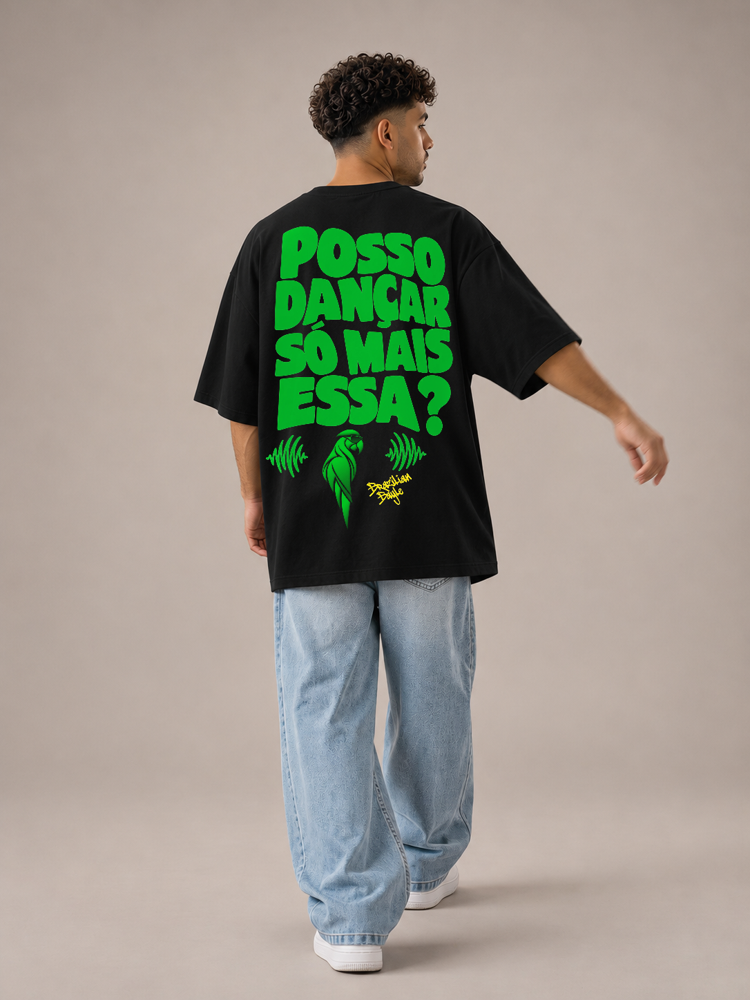
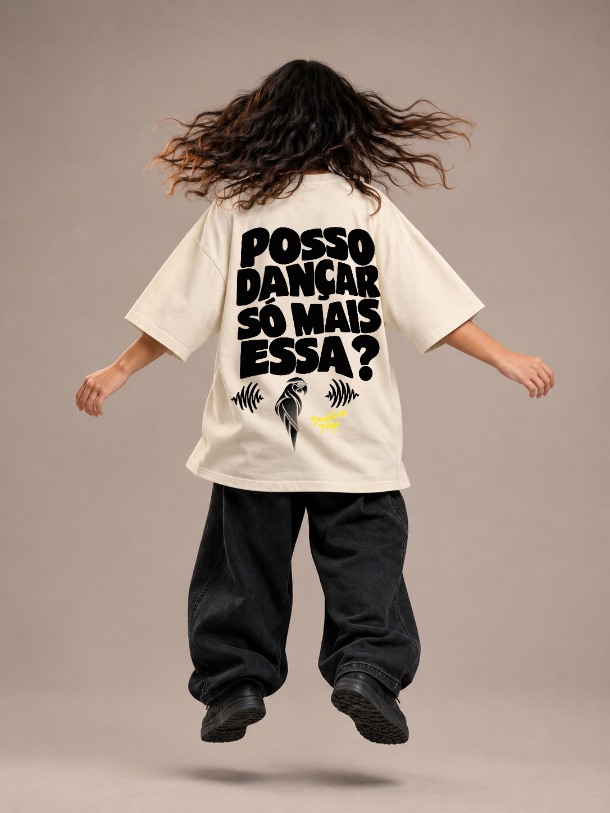
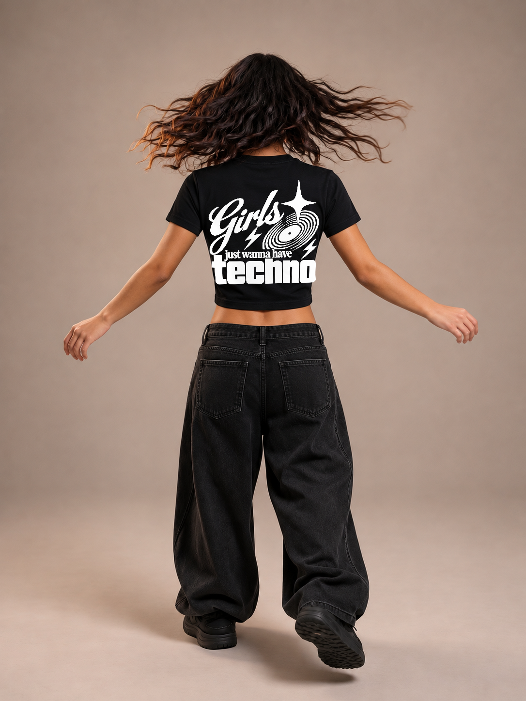

Três pilotos para validar antes de refazer o lote. A IA gerou só as peças lisas; letras e desenhos vieram dos arquivos originais. Fontes gráficas3543×5906px; fotos1086×1448px. Não publicado no site.

Baixar piloto · Camada da estampa

